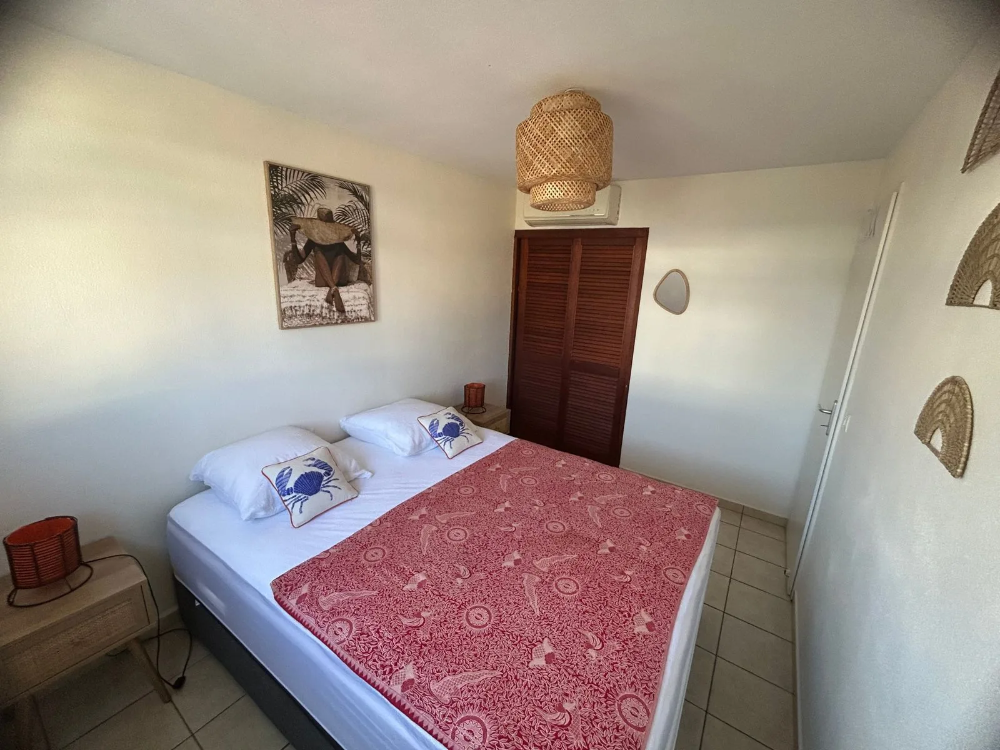
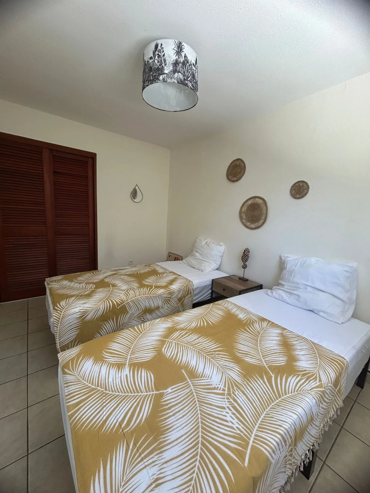
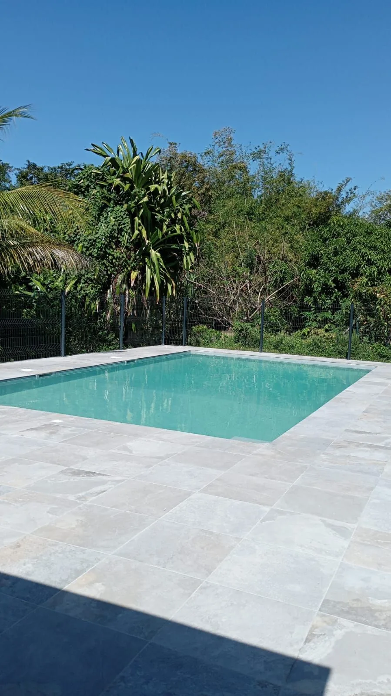
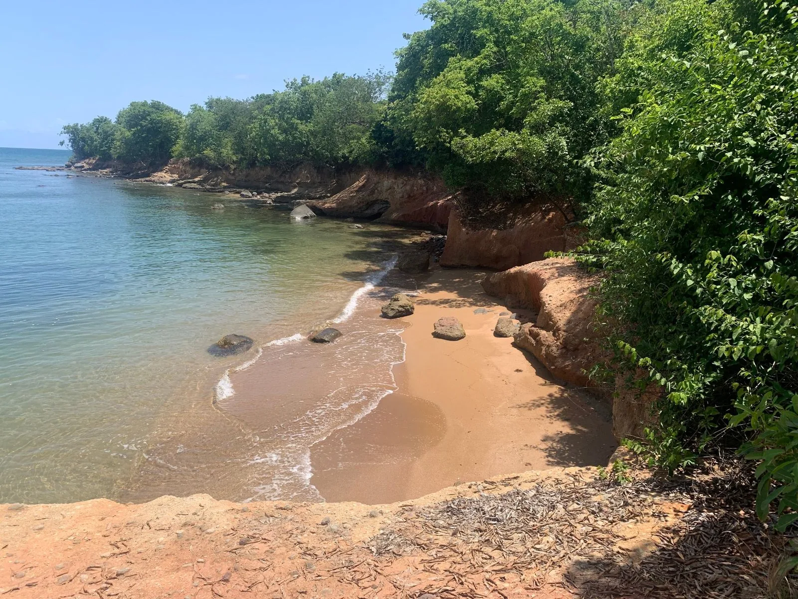
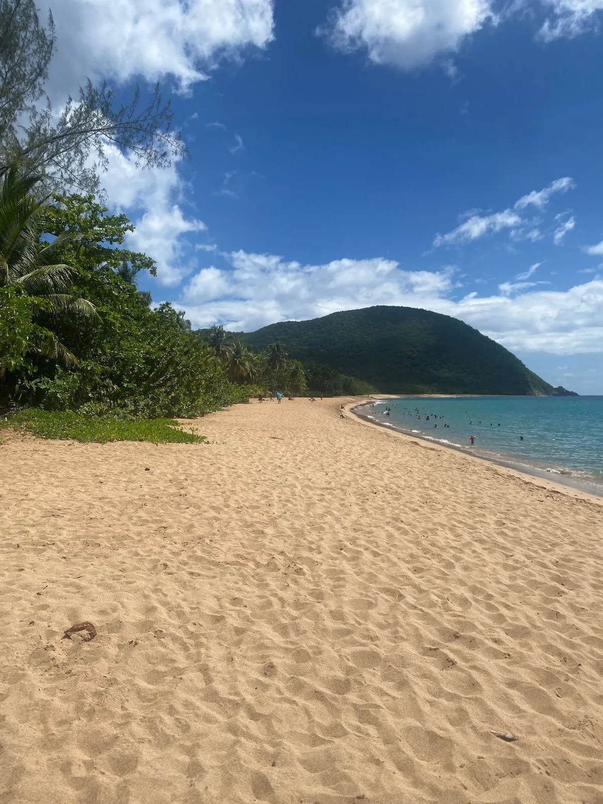
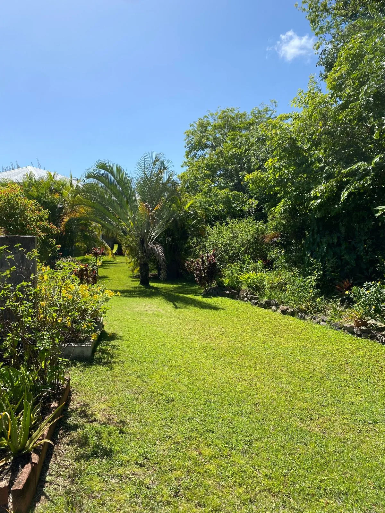
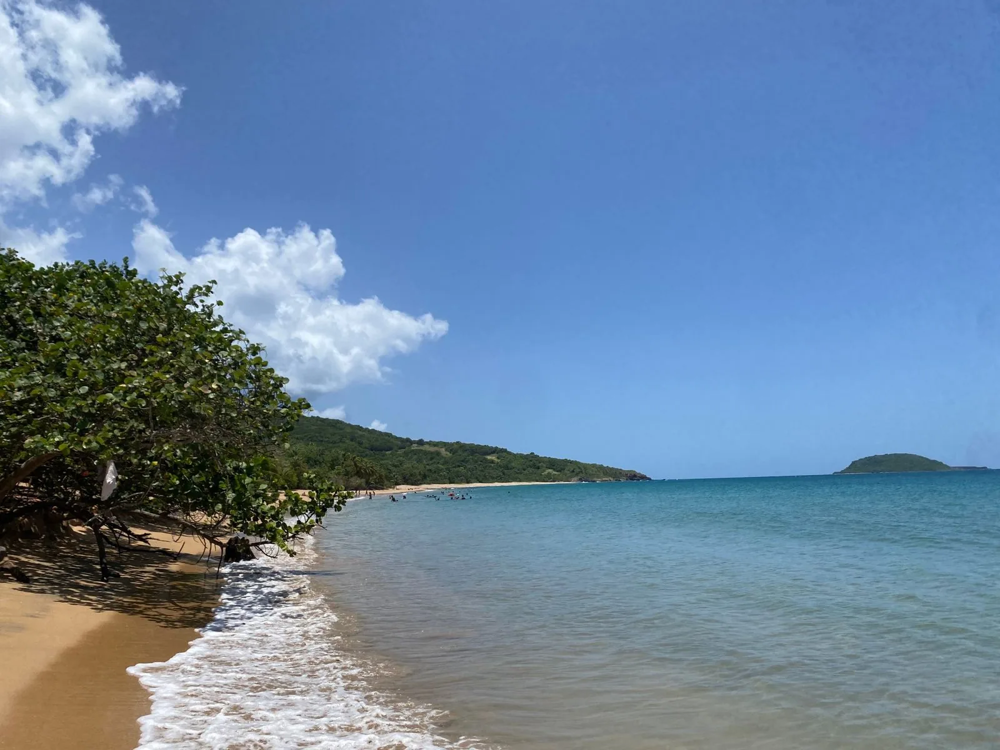

01 / COME IN · THE LIVING ROOM
The terrace
carries on inside.
Sliding doors connect the living room to the terrace. The ceiling fan, white walls and touches of red set the tone.
All photos
Sainte-Rose, Guadeloupe · Basse-Terre
A house that opens onto the garden.
A HOLIDAY HOUSE IN SAINTE-ROSE · GUADELOUPE
The tour starts hereTHE HOUSE
Ti Libélil Blé welcomes six guests in a two-storey house. About 100 m² including the terraces: room to spend the days together and still find your own space.
01 / COME IN · THE LIVING ROOM
Sliding doors connect the living room to the terrace. The ceiling fan, white walls and touches of red set the tone.
All photos02 / SHARE · THE KITCHEN
The open kitchen gathers oven, hob and microwave around the worktop. A dishwasher and a fridge-freezer complete the equipment.
All photos03 / GO UP · TO THE BEDROOMS
The stairs lead to the three bedrooms. Turn around and the living room, terrace and garden fill the same view.
All photosTHE NIGHTS
All bedrooms are air-conditioned. The two queen beds measure 160 × 200 cm; the two single beds, 90 × 190 cm.

1 queen bed · 160 × 200 cm

1 queen bed · 160 × 200 cm

2 single beds · 90 × 190 cm
All three bedrooms are upstairs. The house is on two levels.
THE BATHROOMS
There are two bathrooms, one of them en suite. One has a double basin and a large mirror.
OUTDOORS
Under the terrace roof, a wooden table and an outdoor lounge. Beyond, the greenery of the residence garden.

The pool is shared with the other residents. It is edged with pale paving and greenery.
AROUND THE HOUSE
Leave the house and head for the coast. The photos in this chapter show the area around the house.


The Pointe Allègre coastal path and the beaches of Clugny, Nogent, Vinty and Les Amandiers are the first outings. Towards Deshaies, carry on to Grande Anse and La Perle.
Sainte-Rose · Basse-Terre · GuadeloupeThe exact setting and location of the house are shown on Airbnb.
See the location on AirbnbOUR LOCAL GUIDES
Our tips as owners for enjoying northern Basse-Terre: the coastal path, the beaches, outings and good places to eat. These guides are in French.





PLAN YOUR STAY
Useful pointers for planning your arrival. Full details of amenities and conditions are on Airbnb.
Information checked on 15 October 2026. The Airbnb listing ↗
FREQUENTLY ASKED QUESTIONS
Answers to the questions we are asked most often.
In Sainte-Rose, in the north of Basse-Terre, Guadeloupe. The house is in a residence between the village of Sainte-Rose and Deshaies, close to the Pointe Allègre coastline. Pôle Caraïbes airport is about a 30-minute drive away.
Up to 6 guests. The three air-conditioned bedrooms are upstairs: two bedrooms with a 160 × 200 cm queen bed and one with two 90 × 190 cm single beds. There are two bathrooms, one of them en suite.
No. The pool belongs to the residence and is shared with the other residents. Guests use the footbath and shower before swimming, and children must be supervised by an adult.
Yes. The sea is about 400 m from the house. A small path leads to the Pointe Allègre coastal trail, which takes you on foot to Anse des Îles, the nearest beach, then to Clugny beach in one direction and Les Amandiers beach in the other. Grande Anse and La Perle beach, towards Deshaies, are a short drive away.
A rental car is recommended to explore the island freely: waterfalls, rainforest, Deshaies, Bouillante. Regular buses also link the residence to Pointe-à-Pitre and Bouillante. The sea and the coastal path are within walking distance.
A small shopping centre a few minutes from the house has a hypermarket, a pharmacy, a greengrocer and restaurants. A craft market is held there every Friday from 3 pm to 8 pm. In the morning, a bread van comes through the residence.
All three bedrooms are air-conditioned and a ceiling fan cools the living room. Wi-Fi and a TV are available. The kitchen has an oven, hob, microwave and dishwasher, and there is a washing machine.
Yes: a travel cot and a high chair are available. The bedrooms are upstairs, and children must always be accompanied by an adult at the pool.
Check-in is from 3 pm and check-out before noon.
No. Pets are not allowed, parties and events are not permitted, and the house is non-smoking. Quiet hours are from 10 pm to 7 am, out of respect for the neighbours.
Prices, availability and booking are on the Ti Libélil Blé listing on Airbnb.
The Pointe Allègre coastal path from the house, a boat trip through the mangrove from Sainte-Rose harbour, the Sofaïa hot springs, the Deshaies botanical garden, and further afield the Cousteau Reserve at Malendure, the Bouillante hot sea bath and the waterfalls of Basse-Terre. Our guide to things to do in Basse-Terre (in French) covers them in detail.
YOUR STAY
Choose your dates on Airbnb to see prices, availability and booking conditions.
Check availability on AirbnbBooking directly on Airbnb.